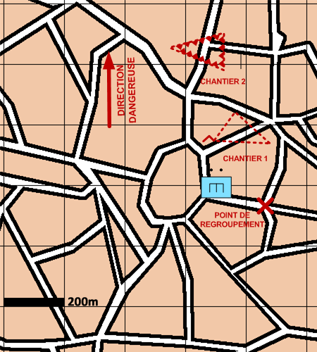

NIVEAU : Pion
ARME : GENIE
MISSION : Realiser Travaux
NIVEAU : Pion
ARME : GENIE
MISSION : Realiser Travaux
Schéma de modélisationRéaliser travaux |
Paramètres obligatoiresChantiersListe des travaux à réaliser |
|
Paramètres optionnelsPosition de regroupementDirection Dangereuse : Orientation privilégiée des capteurs lors de bond ou de reconnaissance de points Limite gauche / limite droite |
||
 |
Fiches missions |  |